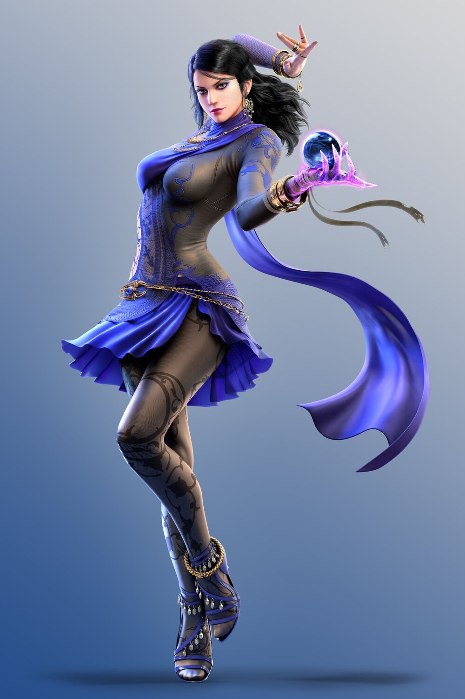

Encabezado nivel 2, como título secundario
Encabezado nivel 3, otros títulos
General Champion Balance
Tier 1
- Ivern Shield: 200/400/600 ⇒ 200/350/500
- Maokai Passive Heal: 100/200/300 ⇒ 100/175/250
- Nasus Ability Damage: 35/70/105 ⇒ 50/70/90
- Nasus Ability Bonus Health: 200/400/600 ⇒ 250/400/550
- Taliyah Mana: 50/85 ⇒ 50/80
- Taliyah Ability Stun Duration: 1.5 ⇒ 2
- Vayne Ability Damage: 8%/12%/16% ⇒ 9%/12%/15%
- Vladimir Ability Damage and Heal Amount: 200/350/500 ⇒ 200/325/450
Tier 2
- Malzahar Minion Health: 300 ⇒ 250
- Rek’Sai Ability Damage: 200/550/900 ⇒ 250/550/850
- Skarner Mana: 0/75 ⇒ 0/65
- Skarner Armor: 30 ⇒ 35
- Thresh Ability Shield: 200/300/400 ⇒ 250/400/600
- Yasuo Ability Hits: 3/5/7 ⇒ 4/5/6
Tier 3
- Ezreal Mana: 0/40 ⇒ 0/30
- Ezreal Ability Cast Time: 0.5 ⇒ 0.25
Tier 4
- Ashe Attack Speed: 0.7 ⇒ 0.8
- Brand Ability Damage: 250/450/650 ⇒ 300/450/600
- Brand Bounces: 4/6/20 ⇒ 5/6/20
- Malphite HP: 800 ⇒ 850
- Olaf Mana: 0/75 ⇒ 0/90
- Yorick Ghoul Health: 750/1250/1750 ⇒ 600/1000/1400
- Yorick Ghoul Attack Speed: 0.8 ⇒ 0.7
Tier 5
- Singed Health: 1050 ⇒ 950
- Singed Ability Damage: 250/500/2000 ⇒ 200/400/2000
- Taric Health: 850 ⇒ 900
Item Balance
- Frozen Heart Attack Speed Slow: 35% ⇒ 25%
- Guardian Angel: Can no longer be healed during the resurrecting state.
- Iceborne Gauntlet Attack Speed Slow: 35% ⇒ 25%
- Ionic Spark Damage: 100 ⇒ 90
Bugfixes
General
- General improvements to melee unit pathing.
- Spooky, invisible Woodland units no longer erroneously add to Trait bonuses
- All PVE small monsters are now properly considered 1-star.
- All summons are now properly considered 0-star.
- Dragon/Elder Dragon/Rift Herald are now properly considered 3-star.
- Ranged Berserkers (via Rapid Firecannon or Berserker’s Axe) now properly deal damage emanating in a
cone from their target instead of themselves.
- Fixed a few height bugs on Freljord Arenas. Items and champions should no longer get buried in the
terrain.
- The Electric trait no longer benefits from Ability Power, and no longer feeds into Hextech Gunblade.
Tier 1 Champions
- Diana's orbs can no longer hit multiple targets each.
- Kog’Maw's ability adjusted to miss far less often.
- Renekton’s ability now properly deals Magic Damage (tooltip to be updated next patch).
- Fixed healing text on Vlad to show the proper amount.
- Zyra’s plants attack speed and duration now match their intended amount.
- Zyra plants no longer occasionally hop into your bench.
Tier 2 Champions
- Malzahar's minions attack speed now matches attack speed ratio. (This results in a slight reduction
of Malz Minion AS)
- Volibear’s ability now also restores him to full mana if a non-execute cast kills the target.
Tier 3 Champions
- Azir no longer summons soldiers adjacent to untargetable units like Zyra plants.
- Dr. Mundo won’t cast his ability when there’s nothing in range that it could hit.
- Qiyana won’t cast her ability when there’s nothing in range that it could hit.
- Clarified Veigar’s tooltip that it instantly kills lower star targets.
- Veigar’s ability now executes non-champions if their star level is below his.
Tier 4 Champions
- Annie can no longer gain mana if she summons two Tibbers (Mage’s Cap), then one of them dies.
- Fixed Ashe’s three-star Scaling to be the intended 250% value
- Fixed an issue where Ashe could not proc Blademaster while her ability was active
- Fixed Olaf and Singed looking like they were glacial’d, even though they were still attacking
Tier 5 Units
- Champions can now properly take damage from multiple poison trails created by different copies of
Singed.
- Zed’s clones now properly attribute damage to Zed in the damage tracker.
Items
- Dragon's Claw now also reduces magic damage received from non-ability effects (Items, Traits, etc.)
- Fixed Iceborn Gauntlet’s attack speed slow occasionally persisting across rounds
- Inferno Cinder now properly works on: Renekton, Jax, Rek’Sai, Vayne, and Nami’s Tidal Wave empowered
attacks
- Spatula items now correctly no longer double the non-spatula component’s stats
- Talisman of Light now correctly grants Magic Resist
Aquí iría otro artículo
Con otro texto que sea bla bla bla...
